Installation#
Introduction#
Thank you for choosing PySSA as a protein structure prediction and analysis tool. To install the PySSA, you first need to download the PySSA-Installer. After that, you can install all components from the PySSA-Installer. To be able to install the PySSA plugin you need to install the two dependencies: WSL2 and Local Colabfold. The installer detects which components are already installed on your system, so you don’t need to check anything. Just follow the steps below to install the software.
Attention
The installation works only with administrator rights! You need a user account which is an admin.
Step 1 - Installation of PySSA-Installer#
To install the PySSA plugin, you need to first install the PySSA-Installer, which then installs all needed dependencies.
1. Start PySSA-Installer#
To start the installation process, double click on the downloaded pyssa-installer.exe in your Downloads folder.
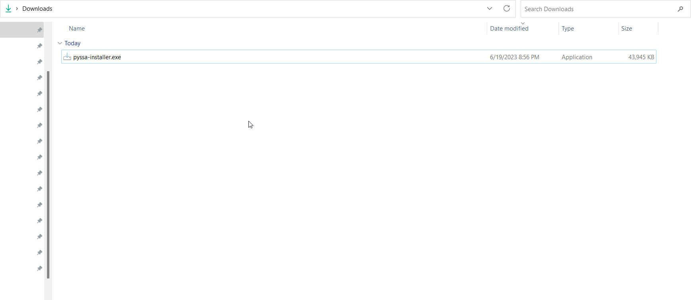{kind=link}
2. Ready to install#
Click on Install to start the installation.
Note
The PySSA-Installer will be installed under C:ProgramDatapyssa_installer.
{kind=link}
3. Installation process#
Now the installation process is running. The progress is shown in the progress bar.
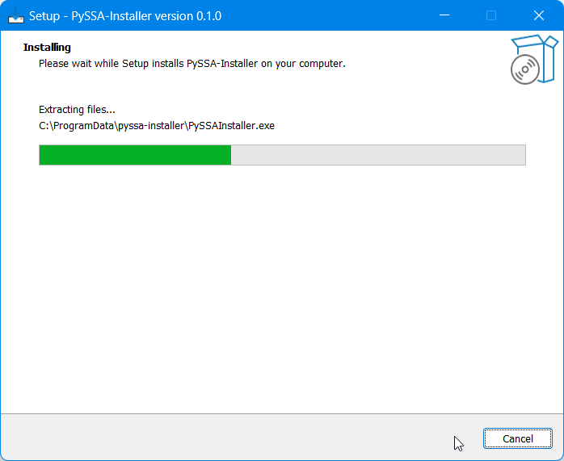{kind=link}
4. Installation is finished#
After the installation is finished, click on Finish to exit the setup.
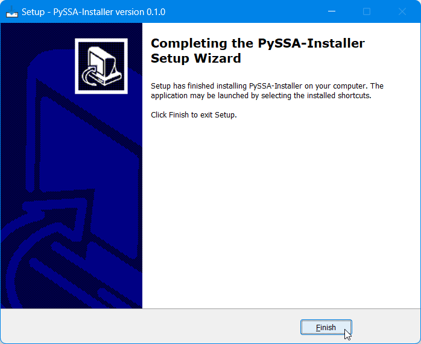{kind=link}
Step 2 - Make your computer ready for PySSA#
Note
To install the PySSA plugin, you need two dependencies: the WSL2 and Local Colabfold. Both can be installed through the PySSA-Installer. The PySSA cannot be installed until these prerequisites are met.
Open the PySSA-Installer from your desktop or start menu.
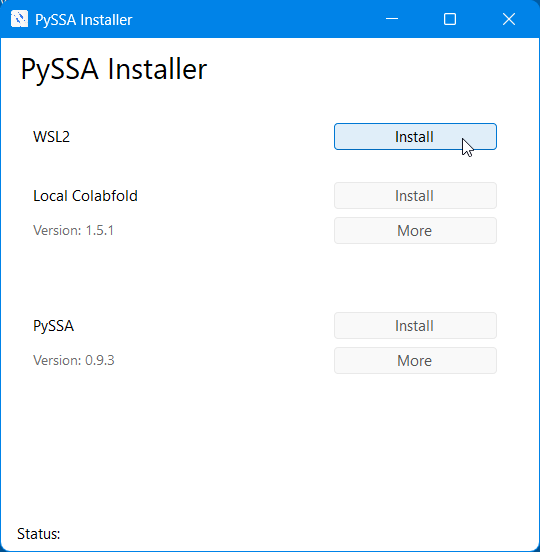{kind=link}
2. Installation of WSL2#
Firstly, click on Install button, to start the installation of WSL2.
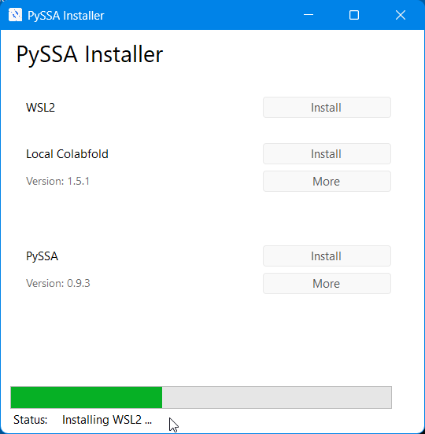{kind=link}
The progress of the installation process is shown in the progress bar, together with a status message below the progress bar.
Important
After the successful installation of WSL2, the computer needs a restart. It is recommended to restart the computer immediately, to be able to proceed with the installation of the Local Colabfold.
To finish the installation of the WSL2, you need to restart your computer!

Note
After the restart, wait until a cmd prompt (black box) opens. It could be necessary to create a new user within the cmd prompt. You can choose whatever username and password you like. It does not matter for the further installation steps.
It could also be, that an error message is displayed. If you see this, then just hit enter.
3. Installation of Local Colabfold#
Important
During the installation of the Local Colabfold, 17GB are downloaded. Check if you have enough disk space! The download can take a long time, depending on your internet connection, so please be patient!
Note
The local colabfold will be download into the pyssa program directory, which is located under C:ProgramData. All components get a separate directory under this pyssa folder.
Firstly, click on Install for the installation of Local Colabfold.
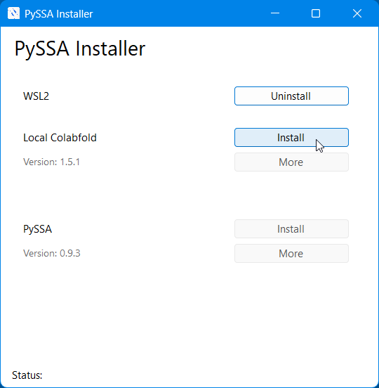{kind=link}
Now the installation process is running. The progress of the download is displayed through the progress bar. The download can take a long time, this is the perfect time to get yourself a cup of coffee.
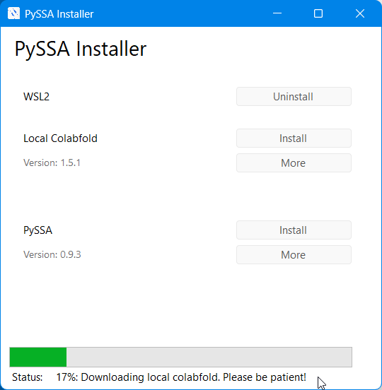{kind=link}
After the download finished, the local colabfold needs to be imported into the WSL2, just stay patient and lean back everything will be done automatically.
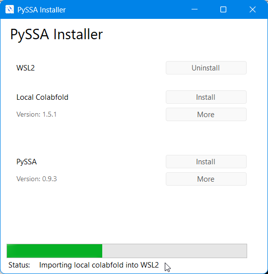{kind=link}
After the installation you can install PySSA.
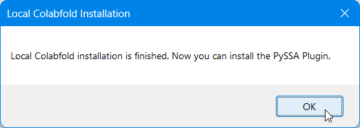{kind=link}
Step 3 - Installation of PySSA#
Firstly, click on Install for the installation of PySSA.

Now the download process of PySSA_setup.exe is running. It is shown in the progress bar.
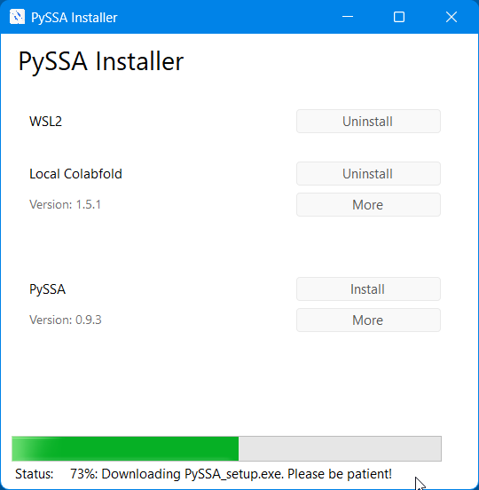{kind=link}
After the download, the setup for installation appears. Click Next to continue.
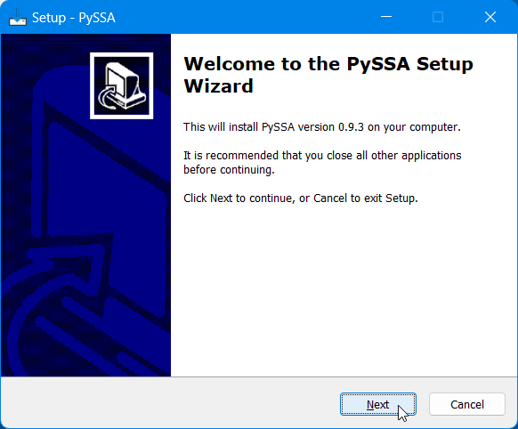{kind=link}
Now you can accept the license agreement with a click on Next. If you don’t accept it, the installation can not begin. So you don’t come to this step.
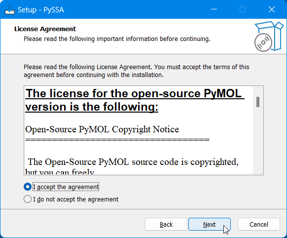{kind=link}
Click on Install.
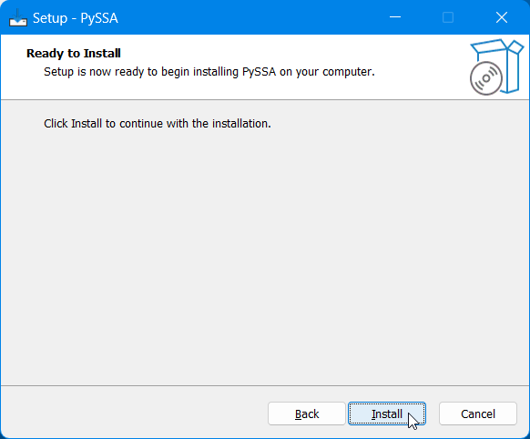{kind=link}
Now the installation process is running. It is shown in the progress bar.
Important
The installation can take some time, so please be patient, even if the install looks like it froze!
Note
The reason for the installation time is that a complete Miniconda gets downloaded and installed. Furthermore, a special conda environment gets created which also takes time. These steps are necessary to install the open-source version of PyMOL.
{kind=link}
After the installation is finished, click on Finish to exit the setup.
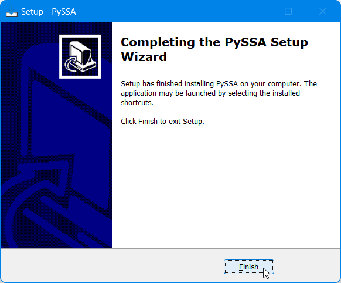{kind=link}
Step 4 - Launch PySSA for the first time#
After all three components are installed, you can finally launch the PyMOL-PySSA application and start exploring it.
1. Start PyMOL-PySSA#
Firstly, start PyMOL-PySSA by clicking on the desktop icon.
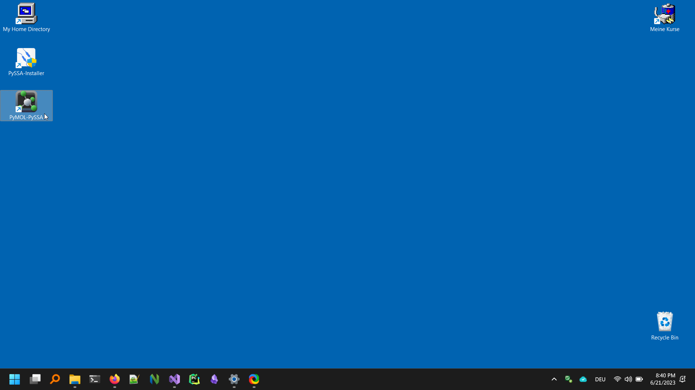{kind=link}
2. Open the PySSA Plugin.#
To open the PySSA plugin, navigate to Plugin and click on PySSA. The plugin should open, after a few seconds, so again please be patient.
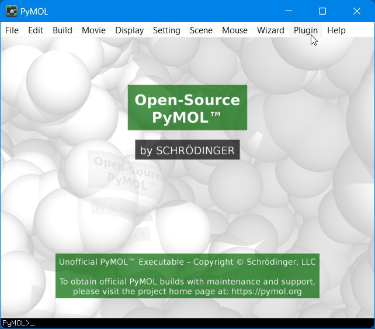 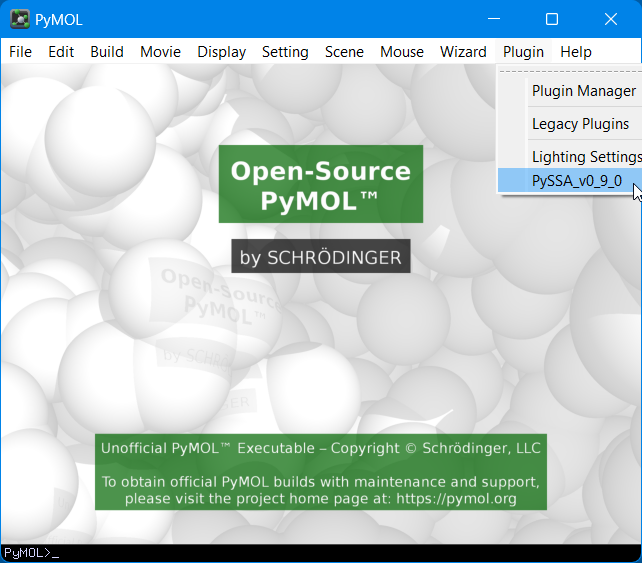{kind=link}
{kind=link}
3. PySSA Launch#
To start the PySSA click on Launch to accept the default workspace path.
Note
If you want another path for your workspace, you can change it there or later in the settings of the plugin.
{kind=link}
4. Basic PyMOL-PySSA Window Setup.#
To work with both, PyMOL and PySSA at the same time, you can split the window in two half’s, by dragging the PyMOL window to the right side of your screen and select the PySSA window on the left side. After that you can resize both windows, if you navigate with your mouse to the center and move the window to the left side.
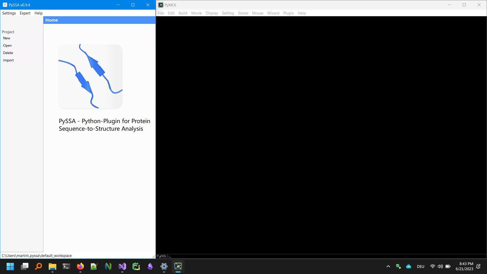{kind=link}